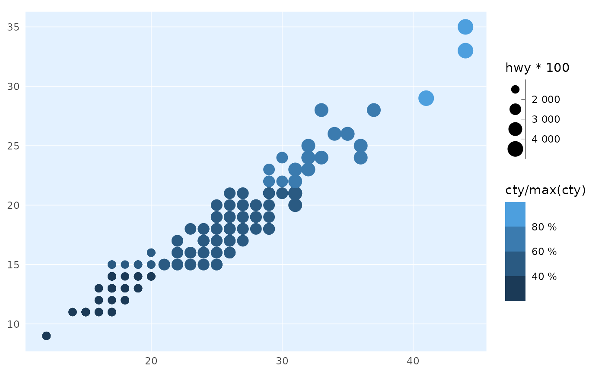

`label_percent_cz()` returns a formatter that outputs percent labels with a " `label_number_cz()` uses space as thousand separator and decimal comma. Use these when you need to format labels on something other than X and Y axes
label_percent_cz(
accuracy = NULL,
scale = 100,
prefix = "",
suffix = " %",
big.mark = " ",
decimal.mark = ",",
trim = TRUE,
...
)
label_number_cz(
accuracy = NULL,
scale = 1,
prefix = "",
suffix = "",
big.mark = " ",
decimal.mark = ",",
trim = TRUE,
...
)A number to round to. Use (e.g.) 0.01 to show 2 decimal
places of precision. If NULL, the default, uses a heuristic that should
ensure breaks have the minimum number of digits needed to show the
difference between adjacent values.
Applied to rescaled data.
A scaling factor: x will be multiplied by scale before
formatting. This is useful if the underlying data is very small or very
large.
Additional text to display before the number. The suffix is
applied to absolute value before style_positive and style_negative are
processed so that prefix = "$" will yield (e.g.) -$1 and ($1).
Additional text to display after the number.
Character used between every 3 digits to separate thousands.
The character to be used to indicate the numeric decimal point.
Logical, if FALSE, values are right-justified to a common
width (see base::format()).
Other arguments passed on to base::format().
library(ptrr)
library(ggplot2)
ggplot(mpg, aes(hwy, cty)) +
geom_point(aes(colour = cty/max(cty), size = hwy*100)) +
theme_ptrr(family = "sans", title_family = "sans", gridlines = "scatter") +
scale_color_binned(labels = label_percent_cz()) +
scale_size_binned(labels = label_number_cz())
